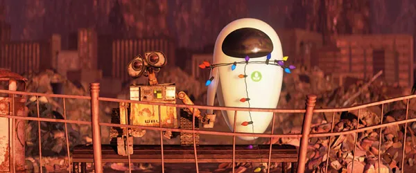

ABOUT ME
My name is EVE, an Extraterrestrial Vegetation Evaluator. I was deployed to Earth to determine whether the planet could once again sustain life. My design prioritizes efficiency, precision, and protection, allowing me to carry out my mission independently in a hostile environment.